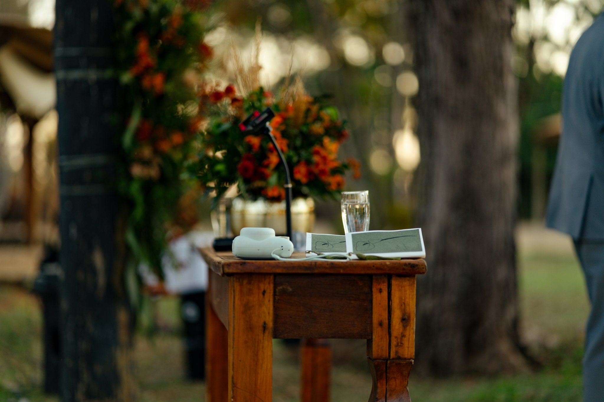

A celebração autêntica de Carol & Alex
Luz dourada, risos descalços e a promessa de nunca deixar a rotina apagar a ternura e a verdade de cada olhar. Como funciona a nossa cobertura na prática baseada no briefing do grande dia.

Quem vê as fotografias e o filme de casamento de Carol & Alex — com seus risos descalços na grama, o véu dançando na luz de poente e a emoção solene da capela — costuma imaginar que tudo aconteceu por mero acaso. Mas a verdade é que a espontaneidade mais pura só floresce onde existe um método invisível, rigoroso e acolhedor nos bastidores.
Muitos casais nos procuram com o mesmo receio legítimo: “Rodrigo, nós não somos modelos, não sabemos posar e não queremos passar a nossa festa inteira presos a um fotógrafo nos dando ordens.” É por isso que, semanas antes de cada celebração, realizamos o nosso Briefing de Cobertura Autoral.
A história de Carol & Alex foi construída em cima desse exato roteiro. A seguir, abrimos os bastidores de como funciona a nossa cobertura na prática — para que você entenda exatamente o que esperar no seu grande dia.
“Uma tarde de cerimônia, uma noite de festa. Discretos e quase invisíveis na primeira parte; soltos, cúmplices e imersos na segunda.”
1. O Roteiro das Sete Horas: Do make-off ao encerramento
O tempo de um casamento não pode ser fatiado como uma linha de montagem. O nosso cronograma é desenhado para fluir com o ritmo natural das emoções:
Chegamos uma hora antes do início para nos integrarmos ao ambiente com calma. Nada de poses clichês com cabides suspensos: registramos o café compartilhado, as piadas internas dos padrinhos, a mãe abotoando o vestido com as mãos trêmulas e os primeiros retratos poéticos em luz natural.
O reencontro de amigos de longa data, os abraços calorosos na entrada, a entrega das lembranças e a expectativa que paira no ar antes da marcha começar.
Aqui vigora o silêncio e o respeito absoluto ao sagrado. Não usamos flashes invasivos; alinhamos previamente com o celebrante onde podemos circular com movimento mínimo. O foco é a lágrima contida dos pais, o olhar recíproco no altar e a bênção das alianças.
O momento do primeiro brinde. O casal respira, cumprimenta os mais próximos e desfruta dos sabores da recepção sem nenhuma interrupção.
Com o sol baixo e a luz dourada rasgando o horizonte, tiramos o casal por apenas 25 a 30 minutos. É um instante de respiro a dois: caminhadas leves, abraços espontâneos e retratos atemporais sem roubá-los da festa.
Com a noite instalada, nossa linguagem muda. Entramos na pista com lentes grande-angulares e luz de preenchimento dinâmica, celebrando junto com os convidados até os últimos instantes da festa.
2. A Lista das Catorze Fotos Essenciais
Um dos maiores receios dos noivos é esquecer de registrar alguém importante — ou, pelo contrário, perder horas em filas cansativas de cumprimentos protocolares.
Para isso, operamos com a nossa lista de prioridades combinadas: fotos formais com pais, avós, irmãos e padrinhos são executadas com precisão cirúrgica e simpatia imediatamente ao término da cerimônia. Em menos de 15 minutos, todos os registros fundamentais para as próximas gerações estão garantidos, e o casal está livre para dançar.
3. A Dinâmica dos Dois Fotógrafos
Nenhum momento decisivo se repete. Por isso, a nossa equipe atua sempre em sintonia fina:
- Rodrigo Zago (Fotógrafo Principal): Condução dos retratos do casal, acompanhamento próximo dos noivos no altar, controle da lista de fotos familiares e olhar atento à narrativa principal.
- Segundo Fotógrafo: Olhar periférico — captura a cenografia e detalhes antes dos convidados entrarem, o ângulo oposto na capela, as risadas descontraídas nas mesas e a energia viva do bar de drinks.
4. Segurança Inegociável nos Bastidores
A poesia só existe quando a retaguarda técnica é imbatível. Todas as nossas câmeras gravam simultaneamente em dois cartões de memória de alta velocidade (backup instantâneo a cada clique). Carregamos equipamento reserva idêntico no local e, ao término do evento, os arquivos passam por backup imediato em dois dispositivos físicos e na nuvem.
“A nossa promessa em cada celebração: a lista de fotos está com a gente, os horários estão combinados e ninguém vai precisar lembrar de nada. A sua única tarefa é viver esse dia.”
Foi exatamente assim que Carol & Alex viveram a sua celebração: leves, presentes e inteiros em cada segundo. E quando você olhar para as suas fotografias amanhã, é essa mesma sensação de paz e autenticidade que queremos que você encontre.